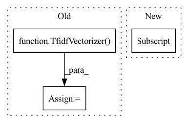

Pattern ID :5588
Before Change
def run(self, results: Dict[str, Any], resource: Resource):
assert results_available(results, "pre_process", "sentences"), "Sentences must be present"
tfidf = TfidfVectorizer()
tfidf_vectors = tfidf.fit_transform(results["pre_process"]["result"]["sentences"]).toarray()
task_results = {
"vectors": tfidf_vectors
}After Change
def run(self, results: Dict[str, Any], resource: Resource):
tfidf_model = TfidfVectorizer(
min_df=self._min_df, max_features=self._max_features)
tfidf_model.fit(results["pre_process"]["result"]["train"]["sentences"] )
task_results = {}
for split in ["train", "val", "test"]:
tfidf_vectors = tfidf_model.transform(In pattern: SUPERPATTERN
Frequency: 3
Non-data size: 3
Instances Fragment ID: 19710924
Project Name: fluidml/fluidml
Commit Name: 1e789cf21b7961ec070e6a1fd5696b9aec57f8c6
Time: 2020-12-24
Author: raj1514@gmail.com
File Name: examples/sklearn/without_gs.py
M Class Name: TFIDFFeaturizeTask
N Class Name: TFIDFFeaturizeTask
M Method Name: run(3)
N Method Name: run(3)
M Parent Class: Task
N Parent Class: Task
M File Name: examples/sklearn/without_gs.py
N File Name: examples/sklearn/without_gs.py
M Start Line: 60
M End Line: 65
N Start Line: 94
N End Line: 102
Before Change
def run(self, results: Dict[str, Any], resource: Resource):
assert results_available(results, "pre_process", "sentences"), "Sentences must be present"
tfidf = TfidfVectorizer()
tfidf_vectors = tfidf.fit_transform(results["pre_process"]["result"]["sentences"]).toarray()
task_results = {
"vectors": tfidf_vectors
}After Change
for split in ["train", "val", "test"]:
tfidf_vectors = tfidf_model.transform(
results["pre_process"]["result"][split]["sentences"]).toarray()
task_results[split] = {"vectors": tfidf_vectors}
return task_results
Fragment ID: 19710925
Project Name: fluidml/fluidml
Commit Name: 28f2885d3db0eb5555b308fbb33c428ff4fe1ff7
Time: 2020-12-24
Author: raj1514@gmail.com
File Name: examples/sklearn/with_gs.py
M Class Name: TFIDFFeaturizeTask
N Class Name: TFIDFFeaturizeTask
M Method Name: run(3)
N Method Name: run(3)
M Parent Class: Task
N Parent Class: Task
M File Name: examples/sklearn/with_gs.py
N File Name: examples/sklearn/with_gs.py
M Start Line: 59
M End Line: 64
N Start Line: 94
N End Line: 102
Before Change
"topic-document-matrix"
if self.id2word == None or self.id_corpus == None:
vectorizer = TfidfVectorizer(min_df=0.0)
corpus = dataset.get_corpus()
real_corpus = []
for document in corpus:
real_corpus.append(" ".join(document))
X = vectorizer.fit_transform(real_corpus)
lista = vectorizer.get_feature_names()
self.id2word = {i: lista[i] for i in range(0, len(lista))}
if self.use_partitions:
ltd = dataset.get_metadata()[
"last-training-doc"]
self.id_corpus = X[0:ltd]
self.new_corpus = X[ltd:]
else:
self.id_corpus = X
hyperparameters["corpus"] = self.id_corpus
hyperparameters["id2word"] = self.id2word
self.hyperparameters.update(hyperparameters)
model = NMF(After Change
if self.use_partitions:
partition = dataset.get_partitioned_corpus(use_validation=False)
corpus = partition[0]
else:
corpus = dataset.get_corpus()
real_corpus = [" ".join(document) for document in corpus] Fragment ID: 19710937
Project Name: mind-lab/octis
Commit Name: b820471512354ea717b2ddf5fb01d8dafcab8aa0
Time: 2021-03-16
Author: s.terragni4@campus.unimib.it
File Name: octis/models/NMF_scikit.py
M Class Name: NMF_scikit
N Class Name: NMF_scikit
M Method Name: train_model(4)
N Method Name: train_model(4)
M Parent Class: Abstract_Model
N Parent Class: Abstract_Model
M File Name: octis/models/NMF_scikit.py
N File Name: octis/models/NMF_scikit.py
M Start Line: 100
M End Line: 154
N Start Line: 99
N End Line: 160